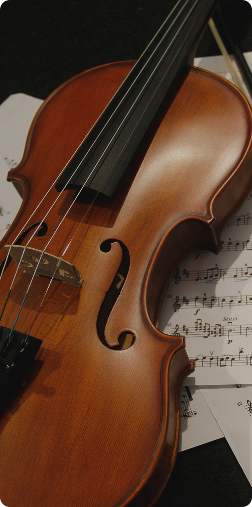

Во время концерта будет осуществляться трансляция на ведущих стриминговых сервисах России — ВК Видео Live, ВК Музыка, Яндекс Музыка.

незабываемый вечер, посвященный русской музыке и двум ее гениальным представителям — Петру Ильичу Чайковскому и Сергею Васильевичу Рахманинову.
В программе концерта — палитра эмоций великих композиторов: от лирических откровений и светлой грусти до безудержной праздничной радости и трагического пафоса. В исполнении студентов МГК им.П.И.Чайковского и приглашенных гостей музыкального вечера прозвучат знаковые сочинения, составляющие золотой фонд мировой классики.